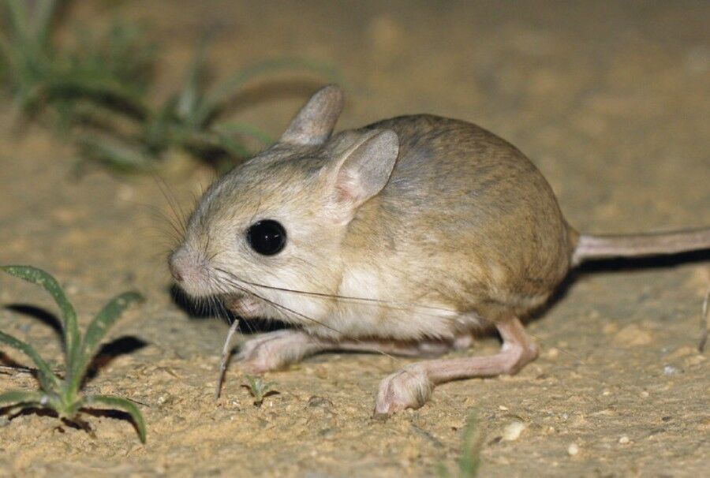

A hosszúfülű ugróegér egy kis termetű rágcsáló, amely sivatagos és félsivatagos területeken él. Nagy fülei és hosszú hátsó lábai miatt könnyű felismerni.
Főként éjszaka aktív, nappal üregekben rejtőzik a meleg elől. Tápláléka leginkább rovarokból áll, amelyeket gyors mozgásával kap el.
Vissza a főoldalra